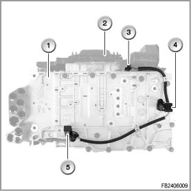

Speed Sensor System
Drive and output speed sensor
The drive and output speed sensors are Hall sensors. Both sensors are located on the upper timing case. They are connected by means of a wiring harness and a connector with the EGS control module.
Both sensors are supplied by the transmission control with a voltage of 8.3 - 9.3 V.

Index Explanation
1 Hydraulic unit (hydraulic selector unit)
2 Electronic module
3 Connector
4 Output speed sensor
5 Driving speed sensor
Brief description of components
Driving speed sensor
The Hall sensor measures the driving speed on the turbine wheel shaft of the transmission. The EGS control module compares the driving speed and output speed and uses this to calculate the shifting time of the clutches. The EGS control module adapts the piston pressures on the clutches accordingly, e.g. to compensate for differences in the friction pad and to adapt the heights.
Output speed sensor
The output speed is proportional to the driving speed and is measured by the Hall sensor on the output flange of the transmission. The EGS control module adopts the engine speed and, together with the load signals, calculates the required gear change.
Notes for Service department
General information
The drive and output speed sensors are a unit with wiring harness and connector. This unit can be replaced separately.
Diagnosis instructions
Relevant sensor faults
In the corresponding test module, the following faults are treated:
- 5654 turbine speed sensor: implausible
- 5655 turbine speed sensor: no signal
- 5656 output speed sensor: no signal
- 5657 output speed sensor: implausible
No liability can be accepted for printing or other faults. Subject to changes of a technical nature